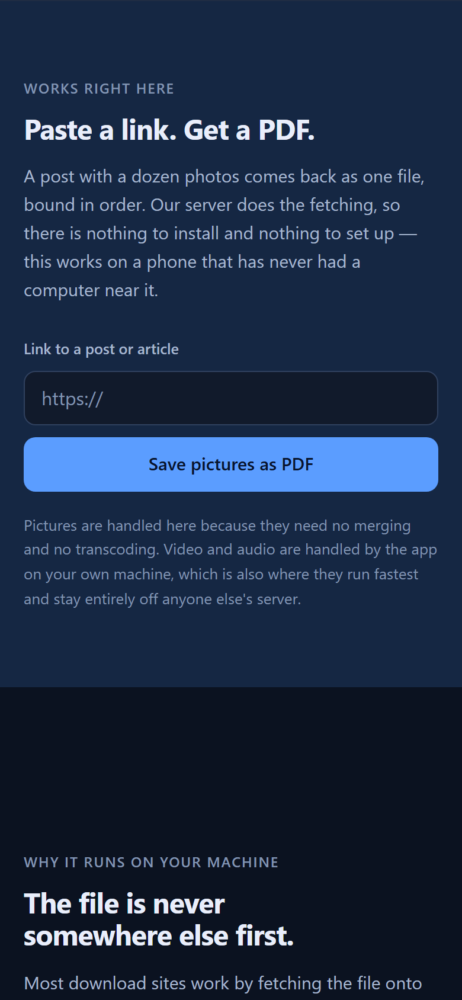
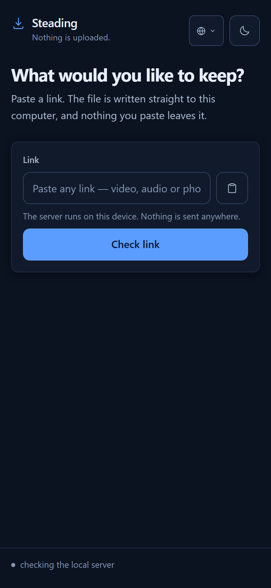
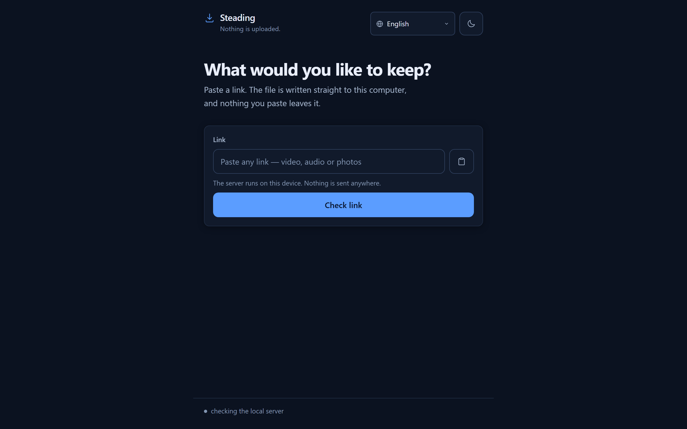
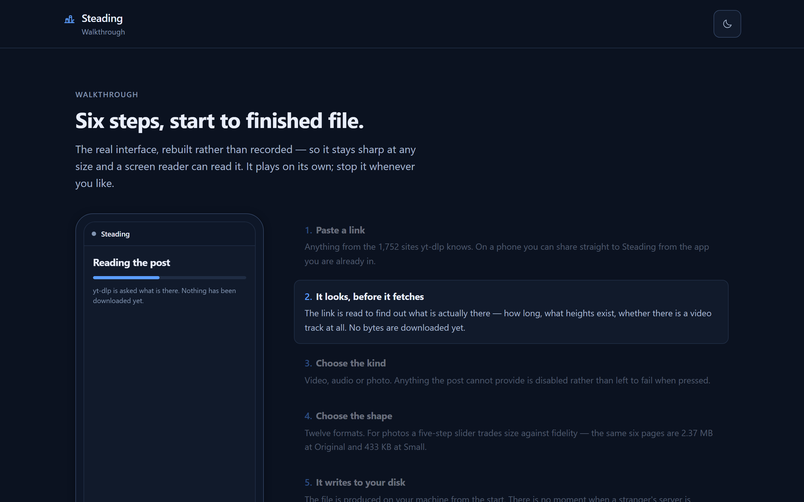
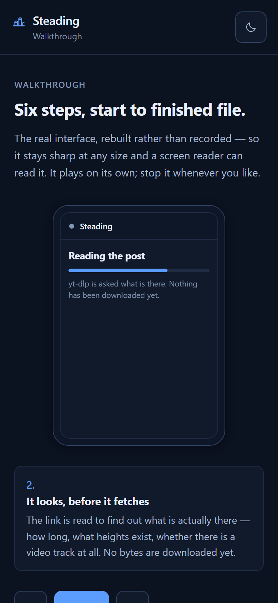
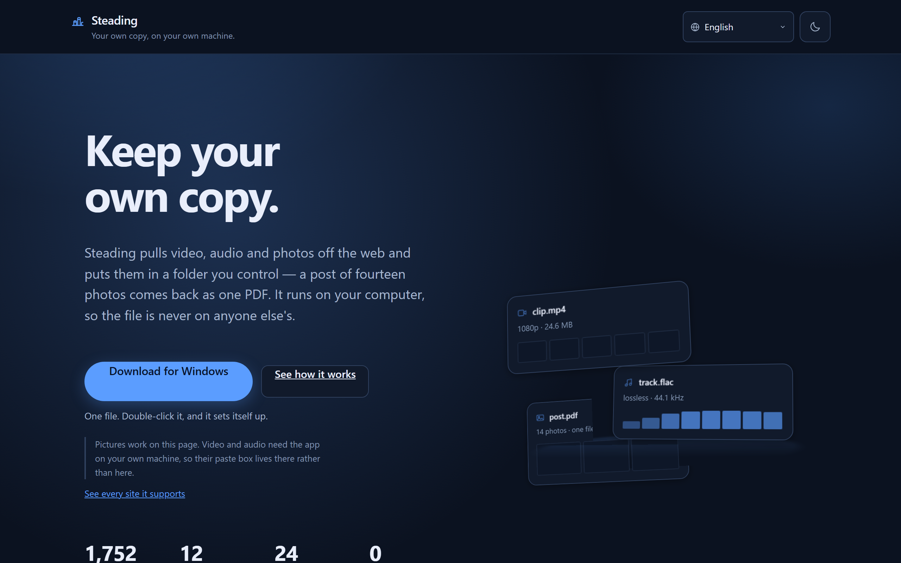
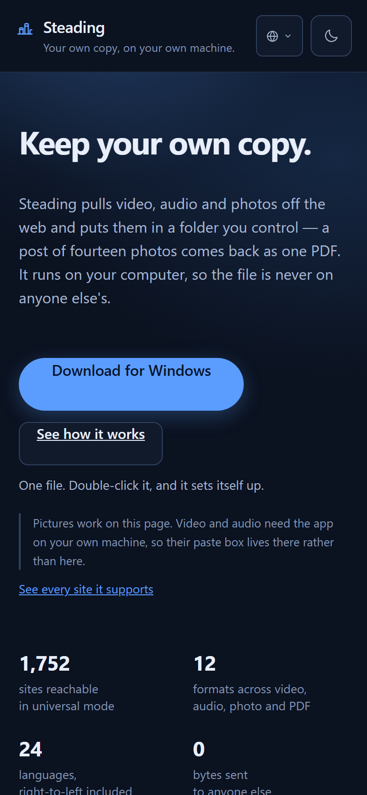
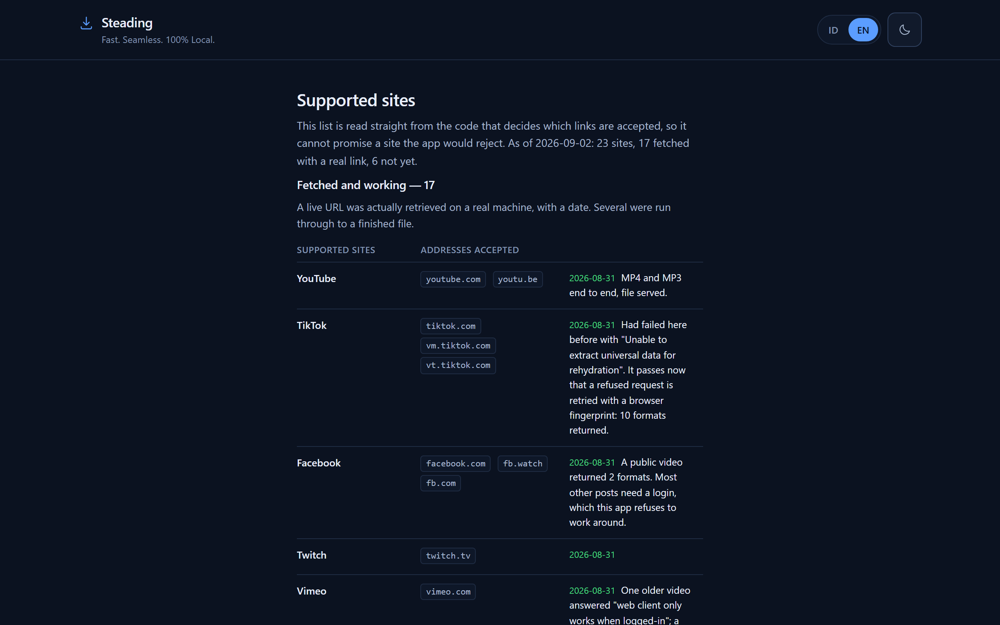

Engineering record
What was built, and how each claim was checked.
Every figure on this page came from running the thing, and the command that produces it is printed beside it. Screenshots are captured through the devtools protocol at a stated viewport, so what you see is what a reader at that width sees.
This is the engineering record for reviewers and auditors, not documentation for people using Steading. It sets out what was measured, what failed, and what the limits are. If you came here to save something, the application is at steading.vercel.app.
1. The picture half runs on the server, with nothing installed
This was assumed impossible for most of the project's life. The assumption was too broad: what a hosted function cannot do is merge a video stream with an audio one, because that needs ffmpeg, a seekable filesystem and tens of megabytes of transfer. Pictures need none of the three, so the whole job fits.

curl -s -D - -o out.pdf -X POST https://steading.vercel.app/api/pictures \
-H 'Content-Type: application/json' \
-d '{"url":"https://en.wikipedia.org/wiki/Lighthouse"}'| HTTP status | 200 OK |
|---|---|
| X-Steading-Pages | 18 |
| X-Steading-Truncated | 0 |
| Response size | 3,084,473 bytes |
| Wall time | ~8.4 s |
file out.pdf | PDF document, version 1.4, 18 page(s) |
Driven through the interface at 390 px rather than only over HTTP, the same request reports “Bound 16 pictures into one PDF (3.0 MB)” and offers the file. All four failure paths were exercised too: empty field, malformed address, a refused private address, and a page with no pictures on it.
The guard, checked in production
Every address is resolved before anything is fetched, and refused if any address it resolves to is private. The second of these is the cloud metadata endpoint — reaching it is how hosted credentials get stolen, so it is tested by name rather than assumed covered.
curl -s -X POST .../api/pictures -d '{"url":"http://127.0.0.1:8080/admin"}'
# {"code": "bad_url"}
curl -s -X POST .../api/pictures -d '{"url":"http://169.254.169.254/latest/meta-data/"}'
# {"code": "bad_url"}2. Three sources for video, not one
A court auditor recorded the single-source dependency as a high risk, and was right about the risk. The proposed remedy — hundreds of per-site packages — would have made it worse: yt-dlp already is roughly 1,750 per-site extractors under one test suite, and this application has zero npm runtime dependencies, which is what makes its privacy claim checkable in the first place.
The remedy that works is the one already proven on the picture path: a chain of independent sources, none of them required.
ytdlp | The primary. ~1,750 per-site extractors. |
|---|---|
streamlink | A separate project with its own extractors, so it fails on a different set of sites. Optional; skipped when absent. |
scrape | lib/videosrc.js. Depends on nothing at all — no binary, no package. Cannot be uninstalled. |
The third link proved on its own, with yt-dlp disabled entirely:
VIDEO_PROVIDERS=scrape npm run universal
POST /api/info https://www.w3schools.com/html/html5_video.asp
→ extractor: page title: W3Schools.com hasVideo: true
POST /api/info https://en.wikipedia.org/wiki/Video
→ extractor: page title: Video - Wikipedia hasVideo: true
And a page yt-dlp rejects outright still completes through the chain:
yt-dlp alone returns ERROR: Unsupported URL on
bbc.com/news; the request through Steading does not fail.
3. The application
The opening screen used to be a 200 px form centred in a 700 px column:
a third of the window blank above it, a third below, and nothing on screen saying
what the program was or what it could hand back. It now introduces itself and lists
what this build can save — read from /api/health rather than
written into the markup, so it cannot claim a format the server would refuse.


| Horizontal overflow | 0 px — scrollWidth 375 against a 375 viewport, no element past either edge |
|---|---|
| Heading contrast | 18.22:1 — passes AA |
| Body and label contrast | 6.08:1 — passes AA |
| Faintest hint and chip | 5.03:1 — passes AA |
| Tests | 69 passing, 0 failing |
| npm runtime dependencies | 0 |
| Formats | 12 — mp4, mkv, webm · mp3, m4a, opus, wav, flac · jpg, png, webp, pdf |
| Extractors in universal mode | 1,752 — read from the installed binary at startup |
4. The walkthrough
Six steps from pasted link to finished file, at /walkthrough. Not a recording: a video file is megabytes, blurs when zoomed, cannot be read aloud by a screen reader, cannot be translated without re-recording, and goes stale the first time a button moves. This is the interface rebuilt from the stylesheet the application already uses, so it is a few kilobytes and stays sharp at any size.
It stops. Any control pauses the timer, arrow keys step through it, a hidden tab halts it rather than letting it play itself out unwatched, and with reduced motion set it does not start at all.


5. The site



Of the twenty-two sites listed, each was probed against a live address rather than a sample link that may have rotted. Three candidates were dropped on evidence: Douyin requires cookies for anything past the front page, Rumble returned 403 to every probe, and Vidio resolves a manifest whose every segment 404s. The number is twenty-two rather than twenty-five because those three failed, and a list that keeps a broken entry to look longer is worth less than a short list that is true.
6. How the screenshots were taken, and one caution
Captured through the Chrome devtools protocol, with
Emulation.setDeviceMetricsOverride setting the layout viewport
explicitly and Page.captureScreenshot taking the frame. No dependency:
Node 22 and later ship a global WebSocket, so the protocol is reachable
with nothing installed.
The obvious method — chrome --headless --screenshot
--window-size=390,900 — was tried first and is wrong. It writes a file
of the size you asked for, but lays the page out at some wider viewport and crops
the result, so text runs off the right edge of every capture.
Three times during this work that clipping looked like a real layout bug, and three
times measuring the document showed scrollWidth exactly equal to the
viewport with no element overflowing. A fourth apparent defect — the whole
page rendered grey and washed out — was also a capture artifact: the body
background measured rgb(255,255,255), with no overlay, no filter, and
every element at full opacity. A fifth: the screenshots on this very page reported
themselves as broken, until forcing them to load eagerly returned all eight at full
size — the loading="lazy" trigger had never fired because the
testing browser was not rendering. Had the pictures been trusted over the
measurements, five fixes would have been made to code that was already correct.
A screenshot is evidence of what a page looks like; it is not evidence of what a
page is.
7. Reproducing all of it
# the application, locally
npm install && npm run check # reports what is missing
npm run universal # all 1,752 extractors accepted
npm test # 69 tests
# the hosted picture tool
curl -s -D - -o out.pdf -X POST https://steading.vercel.app/api/pictures \
-H 'Content-Type: application/json' \
-d '{"url":"https://en.wikipedia.org/wiki/Lighthouse"}'
# the video chain, with the primary source switched off
VIDEO_PROVIDERS=scrape npm run universal